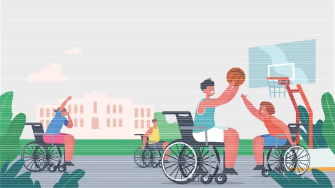

‘2022년 장애인 생활체육조사’로 본 시각장애인 생활체육 현황

1. 작성경위
다음은 [한국시각장애인연합회](http://www.kbuwel.or.kr/)에서 발행하는 월간 손으로 보는 세상 제909호(2023. 3. 10.)에 객원기자로 활동하면서 기고한 글입니다.
2. 세부내용
2.1. 들어가는 말
문화체육관광부와 대한장애인체육회는 지난 1월 2022년 장애인 생활체육조사 결과를 발표했다. 장애인 생활체육조사는 2007년 이래로 매년 1회 실시되는 국가승인 통계로, 이번 조사는 만 10세에서 69세까지 전국 등록 장애인 중 1만 명을 표본으로 하여, 2021년 9월부터 2022년 8월까지 1년을 조사기준으로 하여 시행되었다.
주요 내용으로는 건강 및 체력, 체육활동 및 여건, 장애인 생활체육 실행 및 비실행 실태, 장애인 생활체육에 대한 정보와 혜택 등이 조사되었다. 이 조사 결과를 기초로 시각장애인의 체육활동 현황과 요구를 살펴보고자 한다.
2.2. 시각장애인이 느끼는 건강 및 체력, 행복감은 전체 장애인 평균 대비 상대적으로 높아…
시각장애인이 느끼는 건강상태, 심폐력, 체력에 대한 주관적 인식 조사 결과, 긍정적 응답은 각각 47.3%, 41.2%, 37.0%로 50%를 밑도는 낮은 수준이었지만, 전체 장애인 평균인 34.6%, 31.2%, 26.1%에 비해 상대적으로 높게 나타났다.
또한 갤럽의 ‘세계 행복감지수’를 활용하여 ‘휴식’, ‘타인에 의한 존중’, ‘수면’, ‘일상생활’, ‘즐거움’의 5가지 항목으로 평가한 시각장애인의 주관적 행복감은 각각 52.0%, 37.5%, 34.1%, 33.0%, 36.4%로 ‘휴식’을 제외한 모든 항목이 50%를 밑돌아 낮은 수준이었지만, 전체 장애인 평균인 43.0%, 30.5%, 29.8%, 25.4%, 29.7%에 비해 상대적으로 높은 것으로 나타났다.
2.3. 2022년도 시각장애인 생활체육 참여율 30.4%, 운동의지 없는 시각장애인도 22.8%
생활체육 참여율이란 전체 응답자 대비 최근 1년간 재활치료 이외의 목적으로 주 2회 이상, 그리고 1회당 30분 이상 집 밖에서 운동한 응답자의 비율을 의미하는데, 시각장애인의 생활체육 참여율은 2021년 24.1%에서 2022년 30.4%로 6.3% 증가한 것으로 나타났다.
다만 운동하지도 않고 운동 의지도 없는 시각장애인의 비율도 2021년 11.8%에서 22.8%로 2배 가까이 증가하여 생활체육 참여를 위해 적절한 동기부여가 필요해 보인다.
2.4. 체육시설 편의성 향상을 위해 ‘다니기 쉽게 만들어진 복도와 통로’ 필요
시각장애인이 주로 이용하는 운동 장소는 ‘근처 야외 등산로나 공원’이 가장 많았다.
체육시설 이용률은 18.9%로 나타났으며, 체육시설 이용률이 낮은 주요 이유로 ‘혼자운동하기 어려워서’(23.4%), ‘시간이 부족해서’(18.3%), ‘체육시설에 대한 정보가 없어서’(14.7%) 순으로 나타났다.
체육시설 이용 시각장애인을 대상으로 구체적으로 이용한 시설에 대해 조사한 결과 ‘헬스시설장’(31.6%), ‘수영장 포함 종합센터’(22.8%), ‘실내체육관’(20.2%) 순으로 나타났고, 생활권 주변 체육시설을 이용하는 이유로 ‘거리가 가까워서’(49.2%), ‘시설 이용료가 무료 또는 저렴해서’(18.2%), ‘전문적인 체육시설이 있어서’(13.4%) 순으로 나타났으며, 생활권 주변 체육시설 이용만족도도 82.5%로 높게 나타났다.
한편 체육시설의 이용 편의성 향상을 위한 시설ㆍ설비에 대해 물어본 결과, 시각장애인은 ‘다니기 쉽게 만들어진 복도 및 통로’(29.2%)에 다른 장애유형보다 높은 응답률을 보였다.
2.5. 운동 경험자들이 운동하게 된 동기는 ‘자발적 필요’가 가장 많아…
시각장애인 운동 경험자들의 운동 참여 동기에 대한 조사결과 ‘자발적으로 필요하다고 느껴서’(69.2%)가 가장 높게 나타났으며, 다음으로 ‘가족, 친구 및 지인 권유’(20.1%), ‘TV, 라디오 등 대중매체’(9.3%), ‘인터넷’(0.9%) 순으로 조사됐다.
2.6. 운동 경험자들은 운동 시 프로그램, 편의시설, 운동지도 등에 대한 욕구 늘어나…
시각장애인 운동 경험자들은 운동 시 가장 필요한 사항으로 ‘비용 지원’(36.1%), ‘장애인 생활체육 프로그램’(16.5%), ‘체육시설의 장애인 편의시설’(15.2%), ‘장애인용 운동용품 및 장비’(13.9%), ‘장애인 생활체육 지도’(8.5%) 순으로 응답하였다.
다만 2021년 조사와 비교해보면 ‘비용 지원’과 ‘장애인용 운동용품 및 장비’는 각각 1.4%포인트와 2.0%포인트가 감소한 반면, ‘장애인 생활체육 프로그램’, ‘체육시설의 장애인 편의시설’, ‘장애인 생활체육 지도’는 각각 5.5%포인트, 4.8%포인트, 2.7%포인트가 증가하여, 체육 프로그램 및 운동지도 등 소프트웨어적인 지원과 편의시설 등 접근성 보장에 대한 욕구가 증가하고 있는 것으로 보인다.
2.7. 시각장애인이 운동을 통해 얻는 긍정적 효과는 모든 장애 유형 중에 가장 높아…
운동을 통해 얻는 효과를 ‘신체 건강’, ‘정신 건강’, ‘일상생활’, ‘의료비 절감’의 4가지 항목으로 조사한 결과, 시각장애인은 모든 항목에서 다른 장애유형보다 가장 높은 긍정 응답을 보였다. 항목별로 살펴보면 ‘신체적 건강 유지’가 86.2%, ‘정신적 건강 유지’가 80.5%, ‘일상생활에 도움’이 69.9%, ‘의료비 절감’이 66.8%로 전체 장애인 평균보다 각각 3.4%포인트, 5.3%포인트, 2.1%포인트, 3.4%포인트 높은 수준을 보였다.
이 밖에도 시각장애인의 최근 1년간 운동용품 구매 경험에 대한 조사 결과 ‘스포츠 신발’(17.9%)과 ‘스포츠 의류’(15.0%)가 높은 비율을 보인 반면, 구매금액에서는 ‘라켓류’가 345,000원, ‘스포츠용 휠체어 등의 운동보조 기구’가 341,400원, ‘구기류’가 226,400원으로 나타났다.
생활체육조사에 대한 세부적인 정보는 문화체육관광부 누리집(https://www.mcst.go.kr→주요정책→분야별정책→체육), 문화셈터(https://stat.mcst.go.rk), 국가통계포털(https://www.kosis.kr)에서 ‘2022년 장애인 생활체육조사 결과’ 보고서를 통해 제공되고 있다.